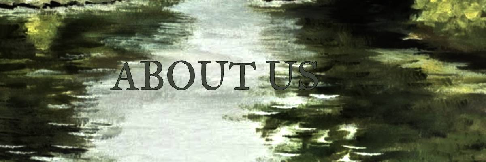
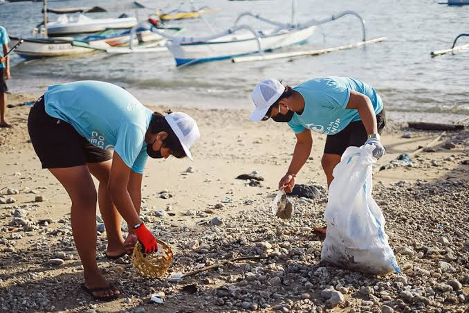
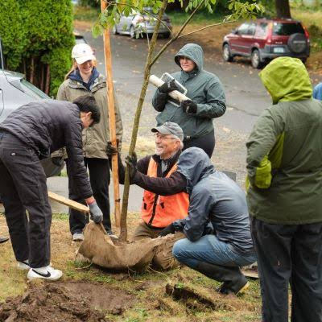

Our team is a non-profit organisation to help save Earth. We specilize in saving the seas and trees with removal of plastic, and growing new trees. We always welcome more people to join us, and we also encourage people to create their own non-profit organisations to help save our planet. We are a group of 42 people currently who have plamted over 100 trees and removed more than 3000 pieces of plastic from the ocean. We also peacefully protest outside enemy buildings. If you would like to join us or have any inquiries, please contact 021-366-6500 or email us at environcarers@gmail.com.

Kaitiakitanga is a Maori word meaning guardianship, preservation or sheltering, and protection. It is a way of maintaining the environment from a tradition Maori view. Maoris would believe that there was a deep kinship with them and the environment, that no one is superior to the natural world and rather they are a part of it. We should continue to practice kaitiakitanga as it is the best way to conserve and protect our land. Here are some ways you can practice this traditional Maori lifestyle:
Plant some trees,
Conserve water,
Reduce waste,
Respect the earth,
You can also take care of animals, as they are connected to the land just like us.
